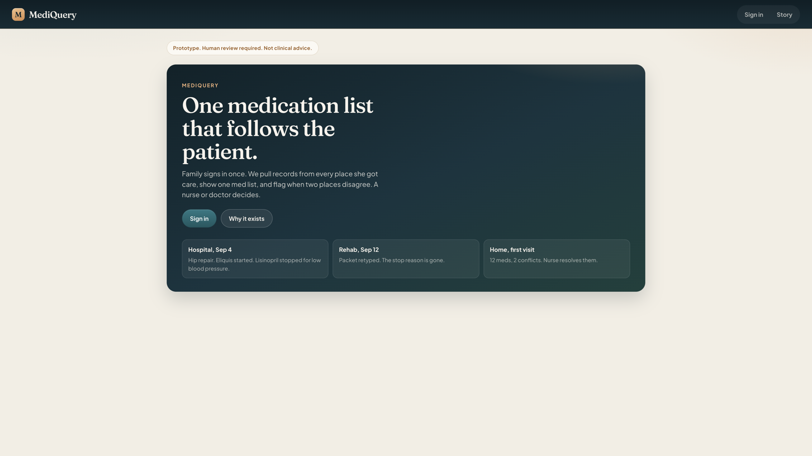
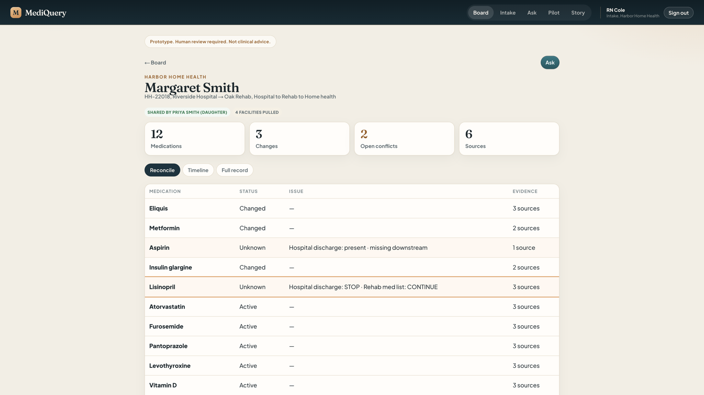
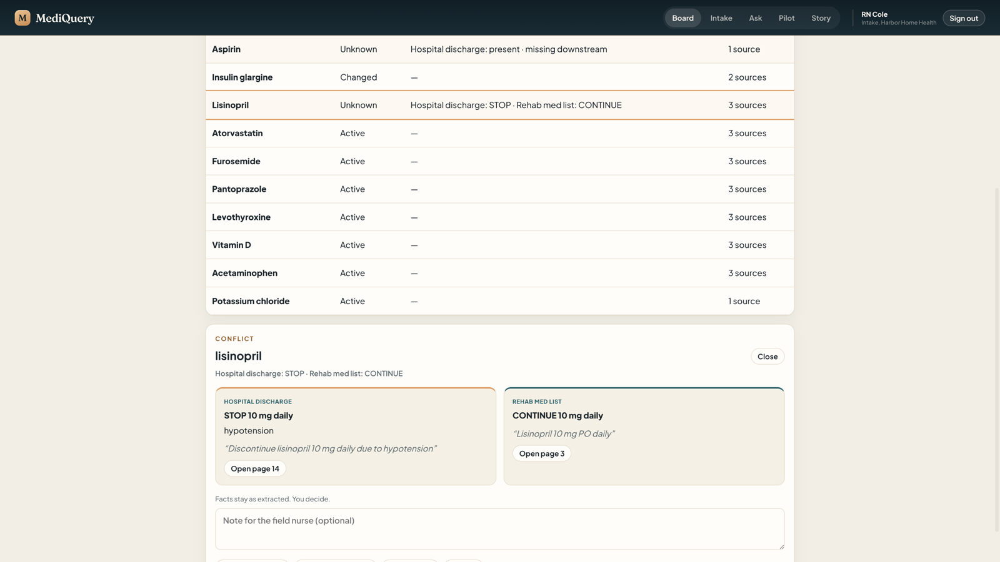
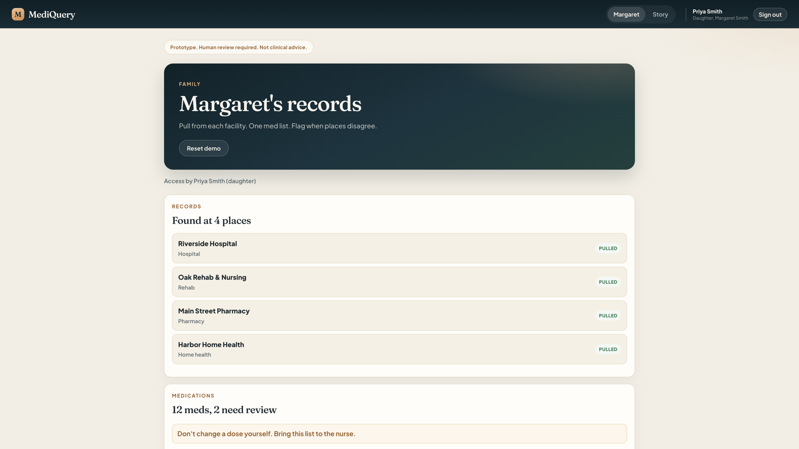
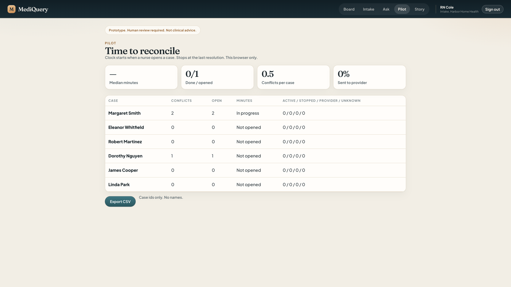

MediQuery
One medication list across hospitals and home health, with conflicts traced to the source line. Next.js · TypeScript · RAG.
Prototype screens with demo patients only.

Home 
Nurse intake board 
Medication reconciliation 
Conflict, with the exact line from each source 
Family view 
Pilot metrics